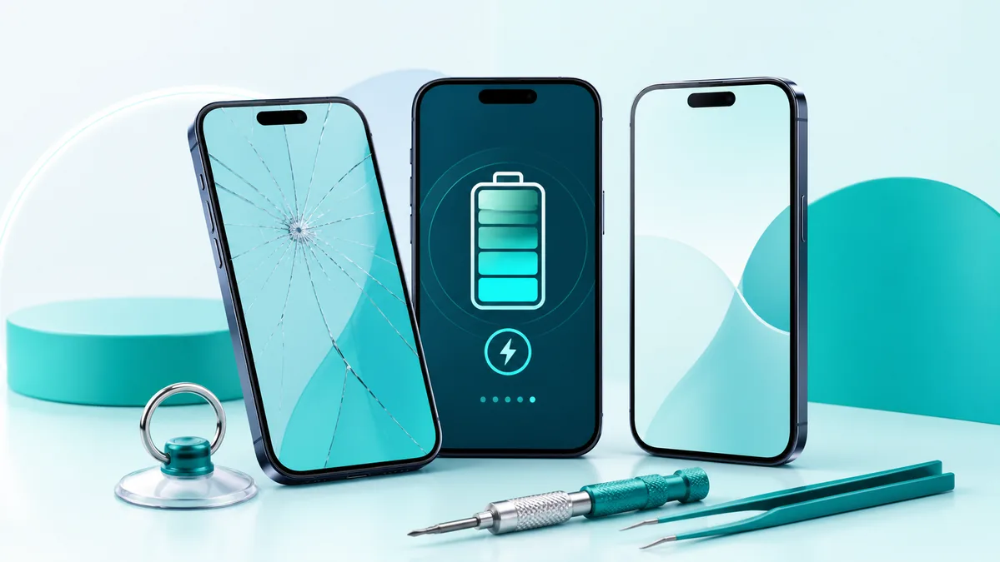

Phone Repairs
iPhone Repairs Brisbane
iPhone screen repair, battery replacement, charging port, back glass, camera and water damage checks. Book online or find a TECHM8 store.
iPhone repair services available at TECHM8

TECHM8 helps customers searching for iPhone screen replacement, battery replacement, charging port repair, back glass repair, camera repair and Apple phone repair near me.
iPhone repair services available at TECHM8
- iPhone screen replacement, iPhone LCD replacement, iPhone OLED replacement and iPhone touch screen repair.
- iPhone battery replacement, no-power checks, overheating diagnosis and battery health warning support.
- Lightning port repair, USB-C port repair, charging dock repair and no-charge diagnosis.
- iPhone back glass replacement, rear housing checks, frame damage inspection and rear camera glass repair.
- Rear camera repair, front camera repair, camera lens glass repair and camera app black screen checks.
- Speaker repair, microphone repair, button repair, vibration fault checks and water damage assessment.
iPhone models we can assess and repair
- iPhone 17 Series and newer iPhone repair enquiries, subject to parts availability.
- iPhone 16, iPhone 16e, iPhone 16 Plus, iPhone 16 Pro and iPhone 16 Pro Max.
- iPhone 15, iPhone 15 Plus, iPhone 15 Pro and iPhone 15 Pro Max.
- iPhone 14, iPhone 14 Plus, iPhone 14 Pro and iPhone 14 Pro Max.
- iPhone 13, iPhone 13 mini, iPhone 13 Pro and iPhone 13 Pro Max.
- iPhone 12, iPhone 12 mini, iPhone 12 Pro and iPhone 12 Pro Max.
- iPhone 11, iPhone 11 Pro and iPhone 11 Pro Max.
- iPhone X, iPhone XS, iPhone XS Max and iPhone XR.
- iPhone 8, iPhone 8 Plus, iPhone 7 and iPhone 7 Plus.
- iPhone 6, iPhone 6 Plus, iPhone 6s, iPhone 6s Plus, iPhone SE models, iPhone 5, iPhone 5c and iPhone 5s.
Why choose TECHM8 for iPhone repairs?
Screen, battery, charging and camera repairs can be more affordable than replacing the whole phone, especially when the device still performs well. Impact damage can affect more than the visible screen, so TECHM8 can assess the symptom, explain the repair option and help you decide whether to continue.
iPhone repair FAQs
What iPhone repairs does TECHM8 offer?
TECHM8 can assess common iPhone repairs including screen replacement, battery replacement, charging port repair, back glass repair, camera repair, speaker and microphone faults, button faults and water damage checks.
Can I book an iPhone repair online?
Yes. Use the Book a repair button to submit your device model, fault and contact details, or use Find a store to choose a nearby TECHM8 location.
Is it worth repairing an older iPhone?
Often, yes. Screen, battery and charging repairs can extend the life of an older iPhone. If the phone has multiple faults, the store can help you compare repair value with replacement.
Will I lose my data during repair?
Most common hardware repairs do not require data removal, but damaged devices always carry risk. Back up your iPhone first if possible.